Leonio ERP – Procure-to-Pay
How the ERP handles buying, from an employee's request to the paid check. One chapter per module, in the same form as the LG-ERP pages: summary, screens, function list, user stories with the actual rules, status flow, accounting entries, and what is not built yet. Screens were captured from the running ERP (company LAMI, sample transactions PR-00004 to JPA00002).
LEO-P2P-00Overview: the whole chain
PR-#####→RFQRFQ-YYYY-####→Purchase QuotePQU#####→Purchase OrderPOGEN#####→Receipt / ASRPRE##### · ASR-YYYY-####→Purchase InvoicePI#####→PaymentJPA#####Approval chains in use (Administration → Approval Designer)
| Document | Steps in order | Condition |
|---|---|---|
| Purchase Requisition | Requester's immediate superior (else role Department Head) | always |
| Purchase Quote (award) | Executive Assistant to the President → Commercial Manager | Commercial Manager only if outside budget |
| Purchase Order | Supply Chain Manager → Supply Chain VP → President | President from ₱1,000,000 |
| Service report (ASR) | Head of the requesting department → Supply Chain Manager | Supply Chain Manager only when the report has exceptions |
| Purchase Invoice | General Accounting Supervisor → Accounting Manager – Shared Service → CFO | CFO from ₱500,000 |
| Payment | Treasury Supervisor → Treasury Assistant Manager → President | President from ₱1,000,000 |
| Vendor accreditation | Supply Chain & Admin Head | always |
| Vendor bank / terms change | General Accounting Supervisor → Treasury Assistant Manager | always |
Rules for every approval: nobody approves a document they created; a step can name an alternate approver; a role in a step also needs the Approve tick for that area in Roles & Permissions (a named superior or person always can); changes to a chain apply to documents sent for approval afterwards.
LEO-P2P-01Requisitions: Purchase Requisition (ERS)
Screens
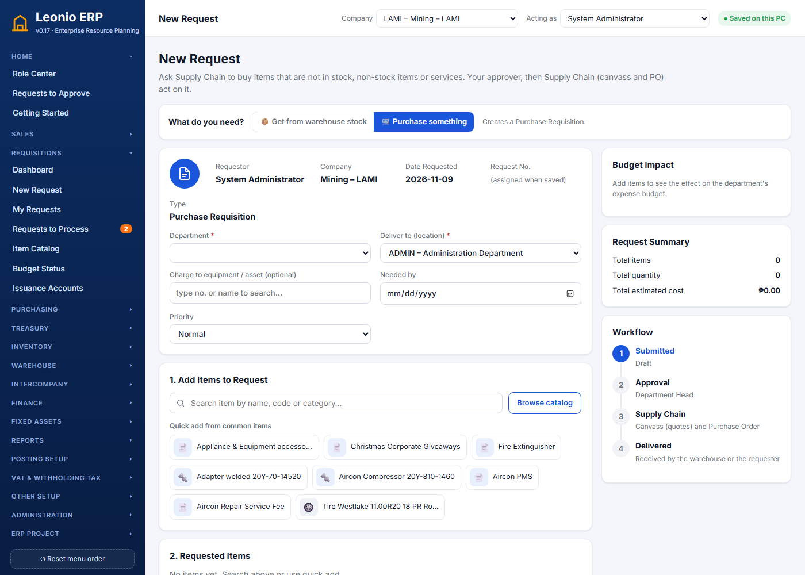
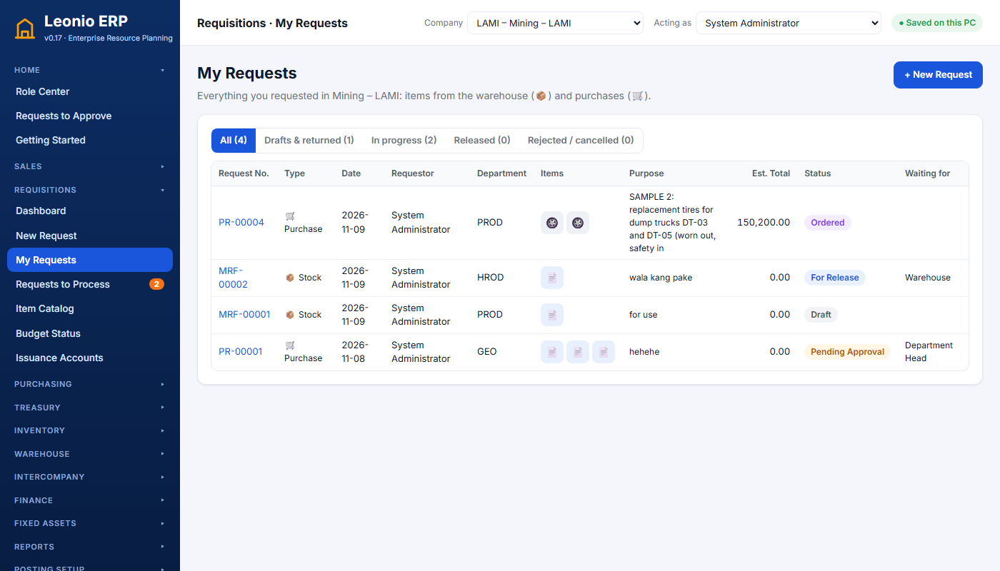
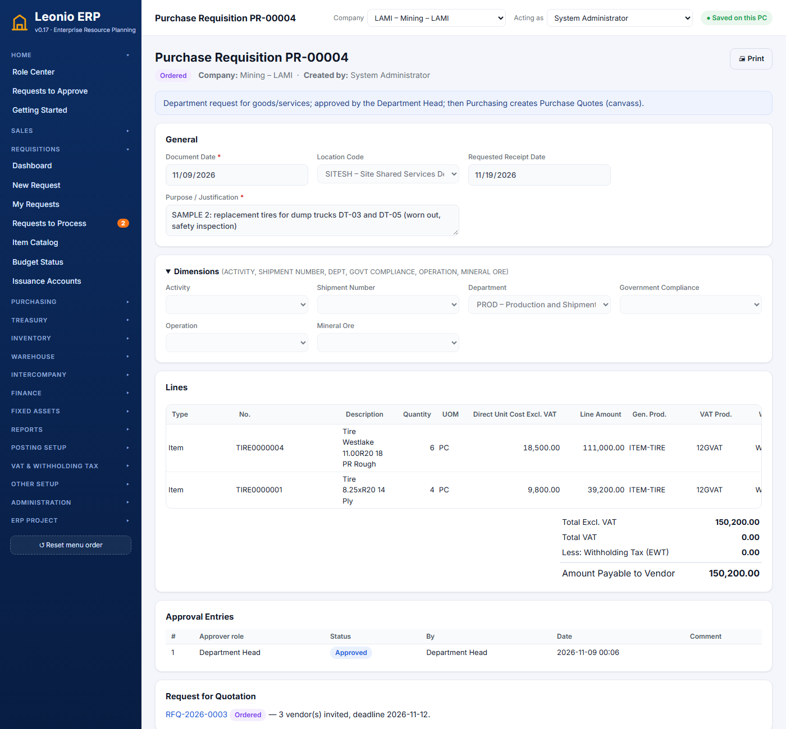
Function list
| # | Function | Screen | Roles | Status |
|---|---|---|---|---|
| F-01-01 | Request items from the catalog (search, category icons, photos) or as free text | Requisitions → New Request | req C (every role) | ✔ |
| F-01-02 | Save as draft, submit for approval, cancel own request, duplicate a request | New Request / My Requests | req C D | ✔ |
| F-01-03 | Budget impact per G/L account; open requests reserve budget; warning at 80%, critical at 95% | New Request, Budget Status | req V | ✔ |
| F-01-04 | Approve, return for changes or reject | Requests to Approve / Requests to Process | superior; req A | ✔ |
| F-01-05 | Start the canvass from an approved PR | PR page → Create RFQ | rfq C | ✔ |
| F-01-06 | Material Request shortage turns into a PR | Requests to Process → Supply Chain Review | req C | ✔ |
| F-01-07 | Specification fields for non-catalog items (size, weight, drawing, attachment) | — | — | ○ |
| F-01-08 | Procurement tracker (every PR line with its stage) | — | — | ○ |
User stories
- Kind "Purchase something" creates document type PR; "Warehouse stock" creates a Material Request (MR).
- Required: department, location, purpose, at least one line with quantity above zero. Estimated cost per line gives the request total.
- Number from the PR number series (
PR-#####). The request shows in My Requests for the person who created it.
- Approver = the requester's "Reports to" user; if none is set, any user with role Department Head.
- The requester can never approve their own request. Rejection needs a reason; the request goes back to the requester.
- Approved PR shows "Create RFQ (canvass)". Once a PO is made, the PR status becomes Ordered.
- Budget per company, year and G/L account (Finance → Budgets). Used = posted G/L + open requests not yet ordered.
- Levels: below 80% fine, 80–95% warning, from 95% critical. With Budget Control on, "outside budget" can add approval steps (e.g. the Commercial Manager on quotes).
Status flow
stateDiagram-v2 [*] --> Draft Draft --> PendingApproval: Submit PendingApproval --> Approved: superior approves PendingApproval --> Rejected: reject (reason) Rejected --> Draft: requester edits Approved --> Ordered: PO made from the awarded quote Draft --> Cancelled: requester cancels
Accounting
None. A PR only reserves budget; nothing posts to the G/L.
LEO-P2P-02RFQ, quotes, technical review and QAR
Screens
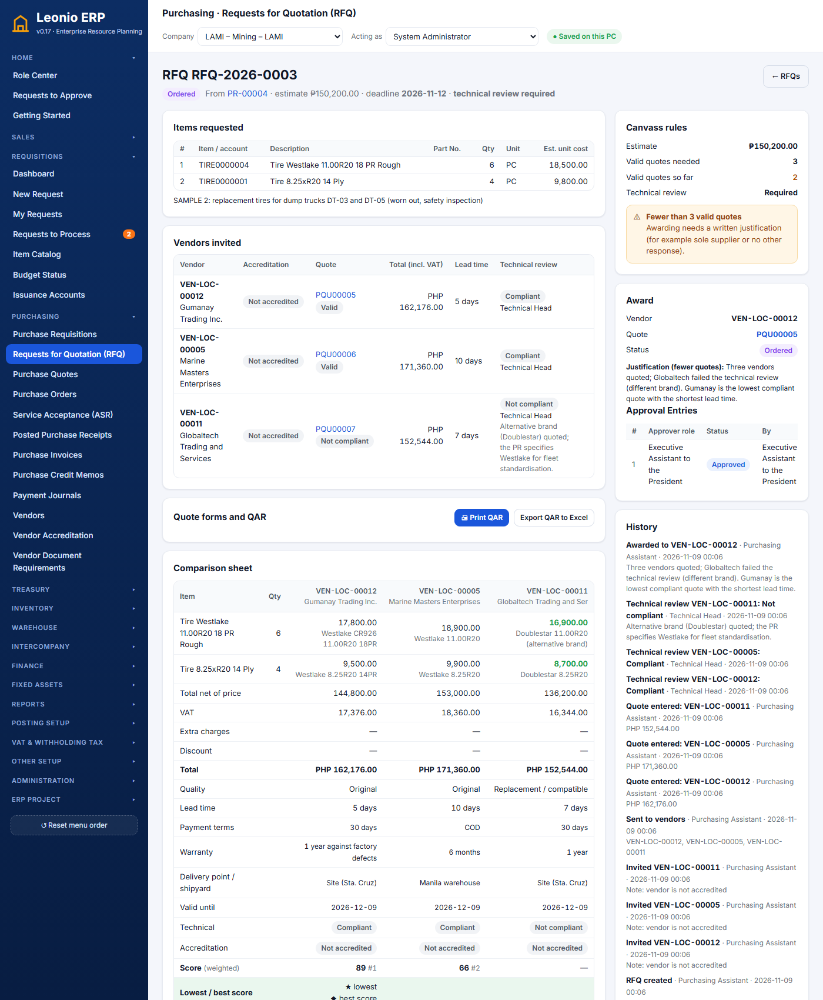
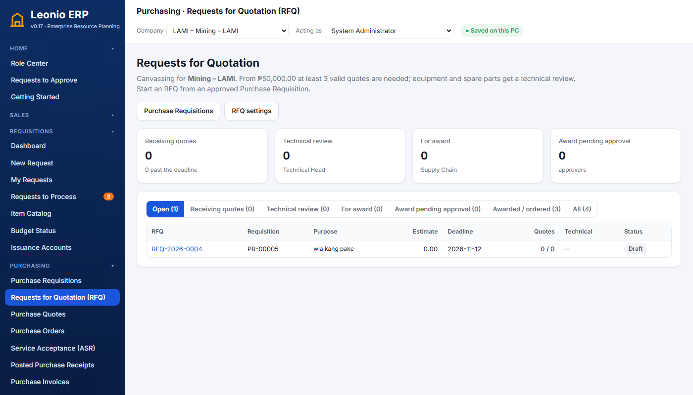
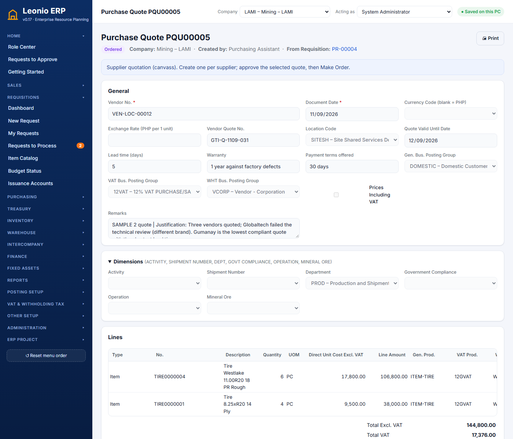
Function list
| # | Function | Screen | Roles | Status |
|---|---|---|---|---|
| F-02-01 | Create RFQ from an approved PR (one RFQ per PR) | PR page | rfq C | ✔ |
| F-02-02 | Invite vendors; blacklisted refused; not-accredited flagged | RFQ page | rfq C | ✔ |
| F-02-03 | Send: one Purchase Quote per vendor, deadline (default 3 days) | RFQ page | rfq C | ✔ |
| F-02-04 | Enter quote: prices, offer per line, part no., lead time, terms, warranty, quality, delivery point, extra charges, discount, currency | RFQ → Enter quote | rfq C | ✔ |
| F-02-05 | Excel quote form per vendor, email draft, upload of the filled form | RFQ → Quote forms | rfq C | ✔ |
| F-02-06 | Technical review per quote (Compliant / with conditions / Not compliant) | RFQ page | Technical Head | ✔ |
| F-02-07 | Comparison sheet with weighted score; lowest valid quote marked | RFQ page | rfq V | ✔ |
| F-02-08 | Award with reason / justification; approval through the Purchase Quote chain | RFQ → Award | rfq C; approvers rfq A | ✔ |
| F-02-09 | QAR print (landscape) and Excel export | RFQ → Print QAR | rfq V | ✔ |
| F-02-10 | RFQ settings: minimum quotes, threshold, deadline, technical categories, score weights | RFQ list → RFQ settings | Supply Chain & Admin Head | ✔ |
| F-02-11 | Options per vendor (alternative brands / delivery points) in one quote | — | — | ○ |
User stories
- From ₱50,000 (estimate) at least 3 valid quotes; otherwise Send and Award ask for a written justification (e.g. sole distributor).
- A quote is valid when every line is priced and, where required, the technical review is not "Not compliant". Declined vendors don't count.
- Required for item categories SPP, TREP, TMAIN, TECH, TIRE, USEDTIRE and for fixed-asset lines (setting); Purchasing can switch it on or off per RFQ.
- The person who created the RFQ cannot review it. "With conditions" and "Not compliant" need remarks.
- Choosing a quote that is not the lowest valid one needs a reason. Reason and justification are written into the quote remarks and the RFQ history.
- Total compared = net + VAT + extra charges − discount, in pesos at the quote date's rate (before withholding tax).
- Score weights (editable): price 40, lead time 20, payment terms 15, warranty 10, vendor rating 10, quality 5.
- A Purchase Quote linked to an RFQ can only be approved through the award; a rejected award reopens the RFQ for award.
Status flow (RFQ stage)
stateDiagram-v2 [*] --> Draft Draft --> ReceivingQuotes: Send to vendors ReceivingQuotes --> TechnicalReview: quotes priced, review needed ReceivingQuotes --> ForAward: valid quotes, deadline passed or all in TechnicalReview --> ForAward: all reviewed ForAward --> AwardPendingApproval: Award AwardPendingApproval --> Awarded: quote approved AwardPendingApproval --> ForAward: award rejected Awarded --> Ordered: Make Order Draft --> Cancelled ReceivingQuotes --> Cancelled
Accounting
None.
LEO-P2P-03Purchase orders
Screens
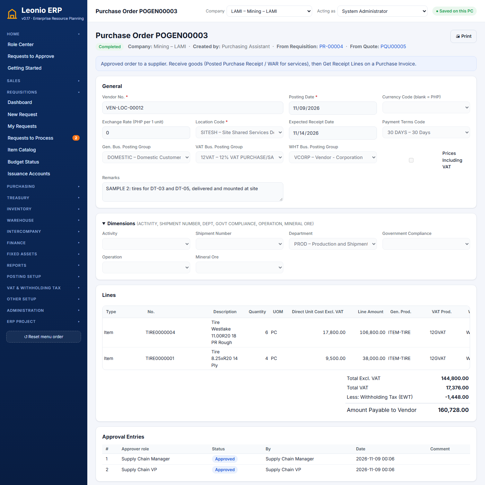
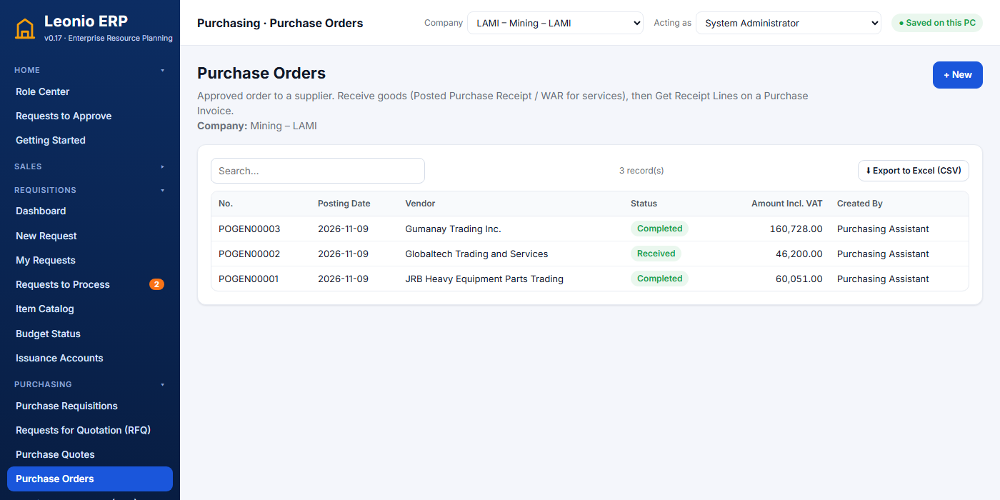
Function list
| # | Function | Screen | Roles | Status |
|---|---|---|---|---|
| F-03-01 | Make Order from an approved quote; other quotes of the PR become Not Selected; PR becomes Ordered | Purchase Quote page | po C | ✔ |
| F-03-02 | Edit lines (item, G/L account, fixed asset, item charge), location, expected date, terms, currency | PO page | po C | ✔ |
| F-03-03 | Send for approval; approve / reject; reopen | PO page / Requests to Approve | po C, po A | ✔ |
| F-03-04 | Block POs to blacklisted vendors; optionally to non-accredited vendors | PO page | setting | ✔ |
| F-03-05 | Print the PO | PO page → Print | po V | ◐ browser print only |
| F-03-06 | Change order / amendment after approval with re-approval | — | — | ○ |
| F-03-07 | Payment milestones on a PO (down payment, progress billing) | — | — | ○ |
User stories
- Lines keep quantity, unit price, part no. and vendor offer; header copies the vendor's posting groups, VAT and WHT groups, payment terms and currency.
- Extra charges or discounts from the quote are noted in the PO remarks to be added as lines (no freight item charge exists in the Mining setup yet).
- Number from series POGEN; location defaults to the request's location.
- Supply Chain Manager, then Supply Chain VP, always; President when the PO total (incl. VAT, in pesos) is ₱1,000,000 or more.
- Once released, the PO can't be edited; Reopen sends it back to draft and the approval starts again.
Status flow
stateDiagram-v2 [*] --> Draft Draft --> PendingApproval: Send Approval Request PendingApproval --> Approved: last approver PendingApproval --> Rejected Rejected --> Draft: Reopen Approved --> PartiallyReceived: some quantity received Approved --> Received: all received PartiallyReceived --> Received Received --> Completed: all invoiced
Accounting
None on the PO itself.
LEO-P2P-04Goods receipt
Screens
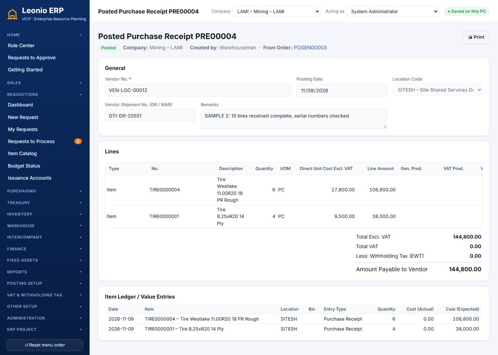
Function list
| # | Function | Screen | Roles | Status |
|---|---|---|---|---|
| F-04-01 | Post Receipt: quantity per line up to what is still open, DR no., remarks, bin where mandatory | PO page → Post Receipt | rcpt P | ✔ |
| F-04-02 | Partial receipts; PO becomes Partially Received / Received | PO page | rcpt P | ✔ |
| F-04-03 | Warehouse Receipt → Put-away for locations with "Require Receive" | Warehouse | whse C P | ✔ |
| F-04-04 | Block receiving service lines when service acceptance is required | PO page | setting | ✔ |
| F-04-05 | Inspection / quality check with rejection and return to vendor | — | — | ◐ remarks only; returns via credit memo |
| F-04-06 | Lot / serial / expiry tracking on receipt | — | — | ○ |
User stories
- Quantity to receive cannot exceed ordered minus received. Each receipt is a posted document
PRE#####linked to the PO. - Inventory items: item ledger entry with quantity and expected cost (unit cost from the PO line, in pesos). Non-inventory and G/L lines only update the received quantity.
- Only received quantities can be invoiced (P2P-06).
Accounting
| Entry | Account | Example (PRE00004) |
|---|---|---|
| Item ledger: quantity + expected cost | no G/L entry | 10 tires, ₱144,800 expected |
LEO-P2P-05Service acceptance: Approved Service Report (ASR)
Screens
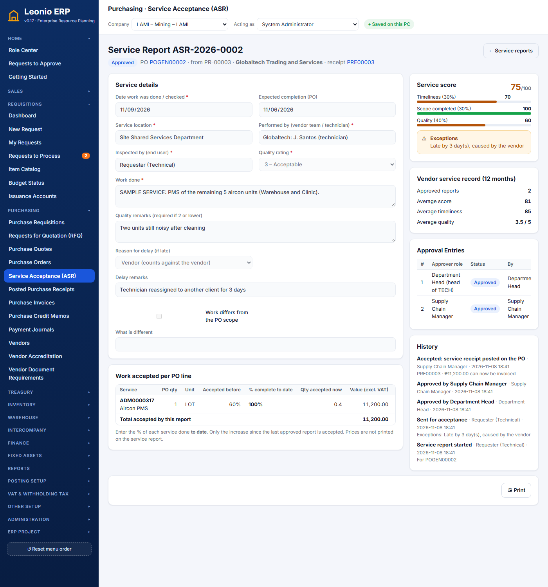
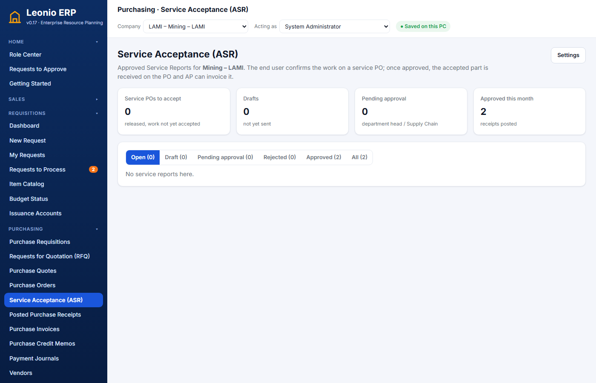
Function list
| # | Function | Screen | Roles | Status |
|---|---|---|---|---|
| F-05-01 | Record service completion from the PO (one open report per PO) | PO page → Record Service Completion | asr C | ✔ |
| F-05-02 | Score and exceptions; vendor service record over 12 months | ASR page | asr V | ✔ |
| F-05-03 | Approve / reject; revise and resend after rejection | ASR page | dept head; asr A | ✔ |
| F-05-04 | Accepted part posted as a receipt on the PO | automatic | — | ✔ |
| F-05-05 | Print the service report without prices | ASR page → Print | asr V | ✔ |
| F-05-06 | Suggest marks in the vendor rating from service reports | Vendor accreditation → Rate | vendors C | ✔ |
User stories
- PO must be Approved or Partially Received. Required: completion date (not in the future), service location, performed by, inspected by, work done, quality.
- % per line is "to date": it may not go below what was already accepted, and at least one line must increase.
- Late against the PO expected date needs a delay reason; quality 2 or lower needs remarks; "work differs from the PO" needs a description.
- Timeliness 100, minus 10 points per day late when the vendor caused it (setting); not penalised for other reasons.
- Scope = average % complete; quality = rating × 20; overall = 30% timeliness + 30% scope + 40% quality.
- Exceptions: quality 2 or lower, late by the vendor, scope differs. A partly complete report is a normal progress report, not an exception.
- Approval: head of the requesting department; Supply Chain Manager added only when there are exceptions. The recorder cannot approve.
- On the last approval a receipt is posted for the increase (qty × % to date − already received). The invoice then picks up only that quantity.
Status flow
stateDiagram-v2 [*] --> Draft: Record Service Completion Draft --> PendingApproval: Send for acceptance PendingApproval --> Approved: last approver → receipt posted on the PO PendingApproval --> Rejected: reason required Rejected --> Draft: Revise and resend PendingApproval --> Draft: Withdraw
Accounting
Same as a goods receipt: quantity received on the PO line, no G/L entry. The expense posts with the purchase invoice.
LEO-P2P-06Purchase invoices and credit memos
Screens
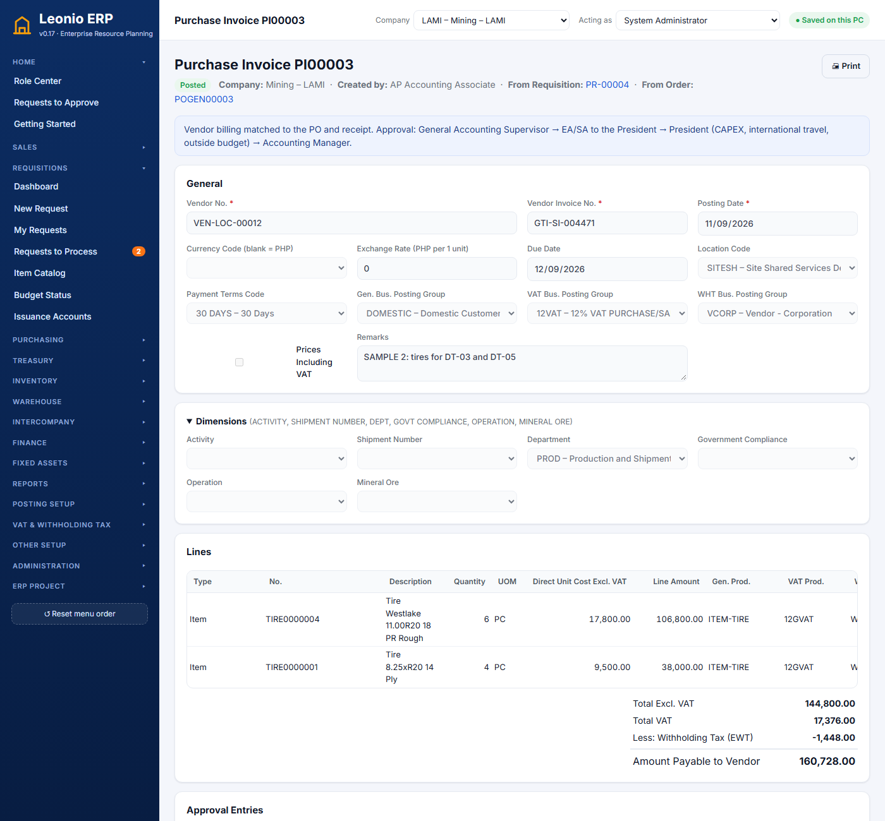
Function list
| # | Function | Screen | Roles | Status |
|---|---|---|---|---|
| F-06-01 | Create Invoice (Get Receipt Lines) from the PO: only received, not yet invoiced quantities | PO page | pi C | ✔ |
| F-06-02 | Direct invoice without PO (utilities, fees) with G/L, item, fixed asset or item charge lines | Purchase Invoices → New | pi C | ✔ |
| F-06-03 | VAT and EWT by posting setup; foreign currency at the invoice date's rate | PI page | pi C | ✔ |
| F-06-04 | Approve, post; vendor ledger entry with due date from payment terms | PI page | pi A, pi P | ✔ |
| F-06-05 | Purchase credit memo (return) | Purchase Credit Memos | pi C P | ✔ |
| F-06-06 | Item charge assigned to an item (landed cost) | PI line type Charge (Item) | pi C | ✔ |
| F-06-07 | 3-way match with price / quantity tolerance and an exceptions queue | — | — | ◐ quantity matched to receipts; no price tolerance check |
| F-06-08 | Attach the vendor's invoice scan | — | — | ○ |
User stories
- Lines = received − invoiced − already on another open invoice, per PO line. Error if nothing is left to invoice.
- Vendor invoice no. is required. Due date = invoice date + payment terms days.
- Approval by amount incl. VAT in pesos: GA Supervisor, Accounting Manager – Shared Service; CFO from ₱500,000. Posting needs status Approved and an open posting period.
Accounting entries (example PI00003)
| Line | Account (LAMI) | Debit | Credit |
|---|---|---|---|
| Items received (inventory account of the item's posting group) | 1132000 Inventory – TIRE | 144,800.00 | |
| Input VAT 12% | 1151010 Input Taxes – Current | 17,376.00 | |
| Expanded withholding tax WC158 1% | 2122210 Withholding Tax – Expanded | 1,448.00 | |
| Payable to the vendor (net of EWT) | 2110010 Accounts Payable – Trade | 160,728.00 | |
| Total | 162,176.00 | 162,176.00 | |
Service and G/L lines debit the purchase account of the General Posting Setup instead of inventory (e.g. 7360002 for the aircon service). The EWT lines feed BIR Form 2307 and the QAP (Reports → Tax).
LEO-P2P-07Payments
Screens
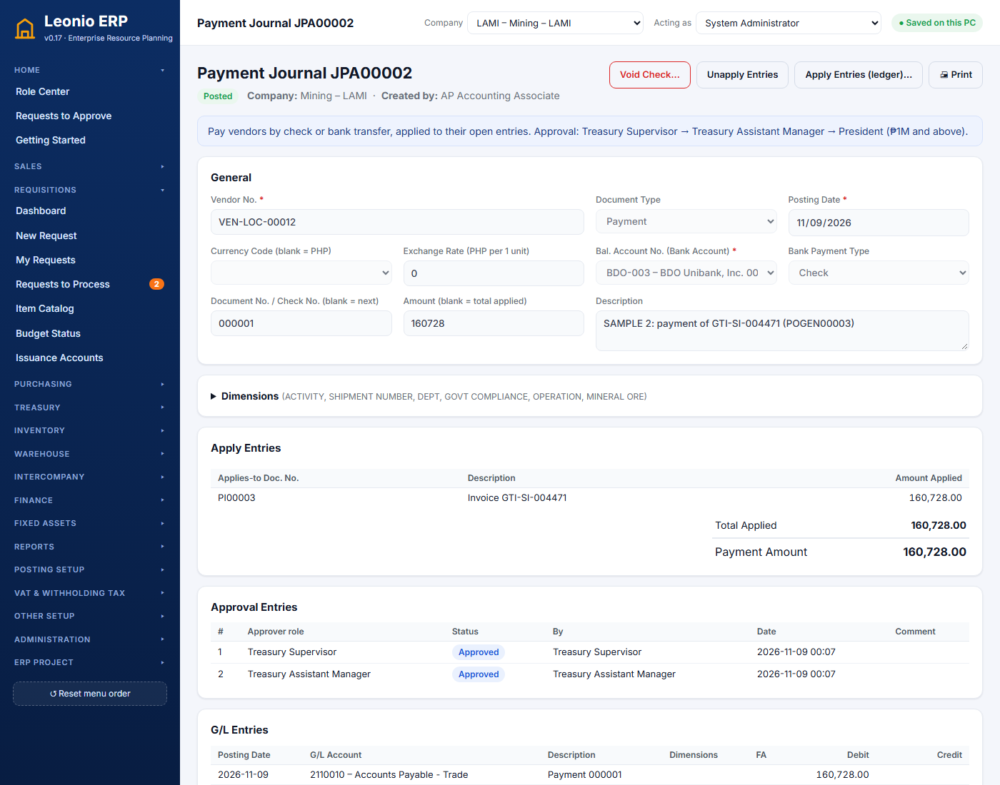
Function list
| # | Function | Screen | Roles | Status |
|---|---|---|---|---|
| F-07-01 | Payment journal: vendor, bank, method, apply entries, amount | Treasury → Payment Journals | pay C | ✔ |
| F-07-02 | Suggest Vendor Payments (due invoices) | Payment Journals → Suggest | pay C | ✔ |
| F-07-03 | Approve and post; check no. assigned; check printing with amount in words | Payment page | pay A, pay P | ✔ |
| F-07-04 | Void check, unapply, apply entries later, vendor refund | Payment page | pay P | ✔ |
| F-07-05 | Foreign currency payments with realized exchange gain / loss | Payment page | pay P | ✔ |
| F-07-06 | Payment run (many vendors in one batch) and bank file export | — | — | ○ |
User stories
- Amount to apply per invoice cannot exceed its remaining amount; currencies must match.
- Check: number = bank account's next check no., assigned on posting. The bank ledger entry feeds the bank reconciliation and the daily cash position.
- Approval: Treasury Supervisor, Treasury Assistant Manager; President from ₱1,000,000. The preparer cannot approve.
Accounting entries (example JPA00002)
| Line | Account (LAMI) | Debit | Credit |
|---|---|---|---|
| Clear the payable | 2110010 Accounts Payable – Trade | 160,728.00 | |
| Bank (BDO-003, check 000001) | 1110011 Cash in Bank – PHP | 160,728.00 |
LEO-P2P-08Vendors and accreditation
Screens
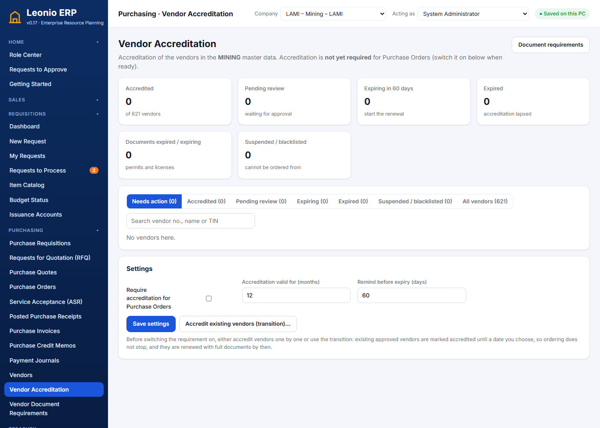
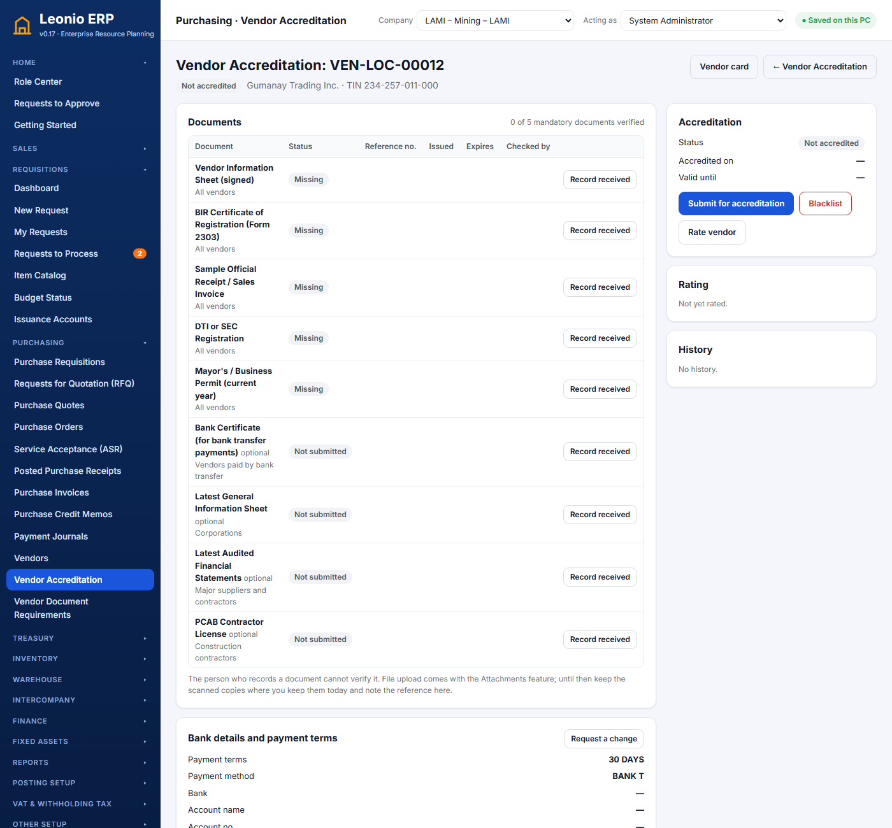
Function list
| # | Function | Screen | Roles | Status |
|---|---|---|---|---|
| F-08-01 | Vendor card with number series (e.g. VEN-LOC-00328), TIN duplicate check, approval of new vendors | Purchasing → Vendors | vendors C; ICT Head / Acctg Mgr approve | ✔ |
| F-08-02 | Required documents list (9 by default, editable) with validity | Vendor Document Requirements | Supply Chain & Admin Head | ✔ |
| F-08-03 | Record and verify documents (two different people) | Accreditation card | vendors C | ✔ |
| F-08-04 | Submit for accreditation; approve; 12-month validity; renewal alerts 60 days before | Accreditation card | vendors A | ✔ |
| F-08-05 | Suspend, blacklist, reinstate with reason | Accreditation card | Supply Chain & Admin Head | ✔ |
| F-08-06 | Vendor rating (delivery 25, quality 30, price 20, responsiveness 15, compliance 10) | Accreditation card → Rate | vendors C | ✔ |
| F-08-07 | Bank-detail and payment-term change request with approval | Vendor card → Request change | vendors C; GA Sup → Treasury AM | ✔ |
| F-08-08 | Vendor self-service portal (documents, quotes) | — | — | ○ |
User stories
- Blacklisted vendors cannot be invited to an RFQ or get a PO. With "Require accreditation for POs" on (Vendor Accreditation settings, off today for the transition), non-accredited vendors are blocked too.
- Mandatory documents must be verified before submitting; the person who recorded a document cannot verify it.
- Payment terms can't be edited directly on the vendor card; a change request goes to the GA Supervisor, then the Treasury Assistant Manager, and is applied on approval.
Status flow (accreditation)
stateDiagram-v2 [*] --> NotAccredited NotAccredited --> PendingReview: Submit (mandatory documents verified) PendingReview --> Accredited: approve (valid 12 months) PendingReview --> NotAccredited: reject Accredited --> Expired: validity ends Expired --> PendingReview: renewal Accredited --> Suspended Suspended --> Accredited: reinstate Accredited --> Blacklisted Suspended --> Blacklisted
LEO-P2P-99Open items and limits (as of v0.17)
- No real logins yet. Users switch with "Acting as"; permissions and approvals apply to the chosen user, but nobody is stopped from choosing another user. Logins and a shared database are the last step in the build order.
- Runs on one PC. The ERP is served from the administrator's PC (localhost:8765); others cannot reach it over the network.
- No file attachments (vendor quotes, invoices, accreditation documents are recorded, not uploaded).
- 3-way match limits the invoice to received quantities but has no price or quantity tolerance check or exceptions queue.
- PO change orders, payment milestones and payment runs are not built.
- Freight on quotes: the Mining setup has no freight item charge, so quote extras are noted on the PO instead of added as a landed cost.
- Procurement tracker (every PR line with its stage) is planned, from the Tankering PR/PQ monitoring workbook.